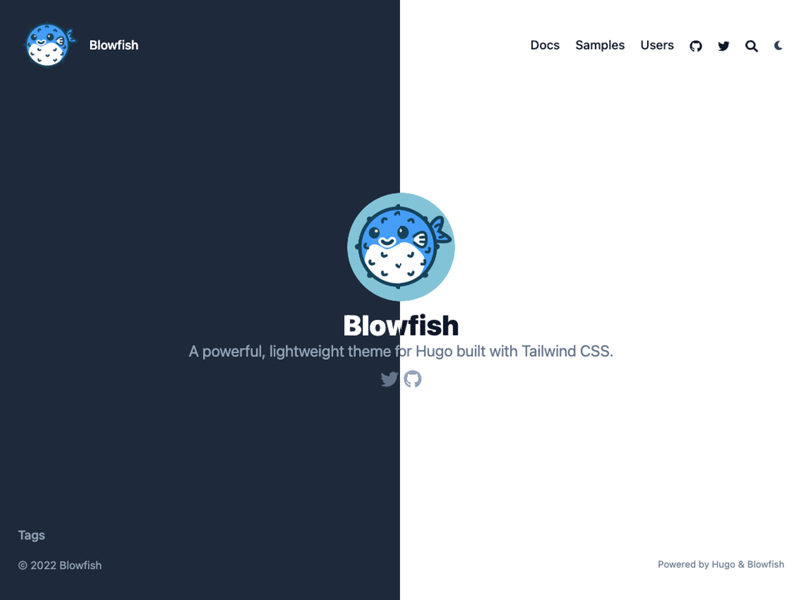
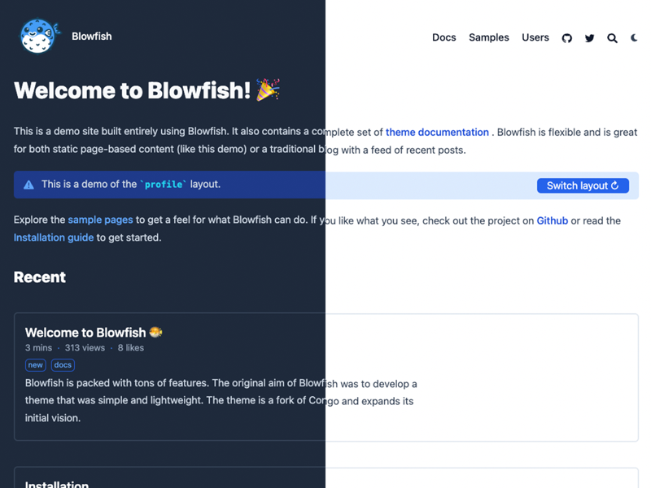
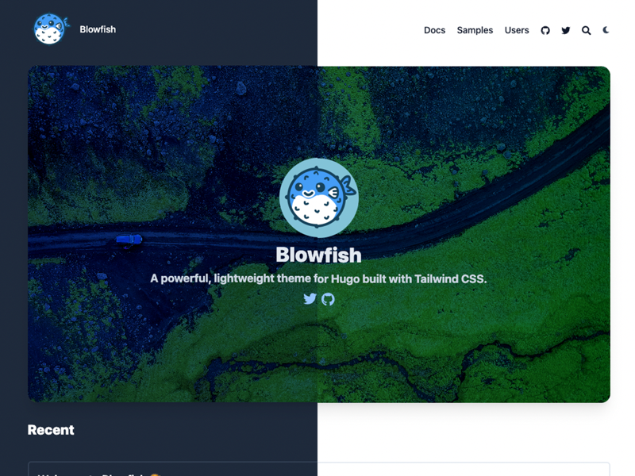
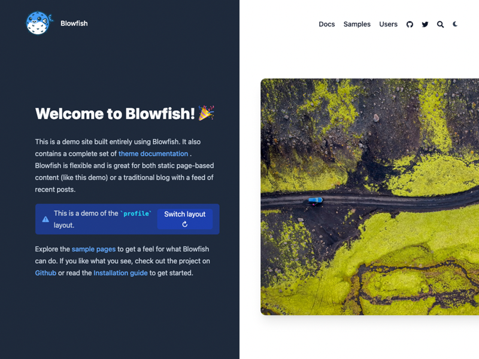

Homepage Layout
Documentation - This article is part of a series.
Blowfish provides a fully flexible homepage layout. There are two main templates to choose from with additional settings to adjust the design. Alternatively, you can also provide your own template and have complete control over the homepage content.
The layout of the homepage is controlled by the homepage.layout setting in the params.toml configuration file. Additionally, all layouts have the option to include a listing of
recent articles.
Profile layout
The default layout is the profile layout, which is great for personal websites and blogs. It puts the author’s details front and centre by providing an image and links to social profiles.
The author information is provided in the languages configuration file. Refer to the Getting Started and Language Configuration sections for parameter details.
Additionally, any Markdown content that is provided in the homepage content will be placed below the author profile. This allows extra flexibility for displaying a bio or other custom content using shortcodes.
To enable the Profile layout, set homepage.layout = "profile" in the params.toml configuration file.
Page layout
The page layout is simply a normal content page that displays your Markdown content. It’s great for static websites and provides a lot of flexibility.
To enable the Page layout, set homepage.layout = "page" in the params.toml configuration file.
Hero layout
The hero layout brings together ideas from the profile and card layouts. This one not only displays information on the author of the site but it also loads your markdown beneath it.
To enable the Hero layout, set homepage.layout = "hero" and homepage.homepageImage in the params.toml configuration file.
Background layout
The background layout is a more smooth version of the hero layout. As in the Hero layout, this one also displays both information on the author of the site and loads your markdown beneath it.

To enable the Background layout, set homepage.layout = "background" and homepage.homepageImage in the params.toml configuration file.
Card layout
The card layout is an extension of the page layout. It provides the same level of flexibility by also displaying your markdown content and adds a card image to display visual content.
To enable the Card layout, set homepage.layout = "card" and homepage.homepageImage in the params.toml configuration file.
Custom layout
If the built-in homepage layouts aren’t sufficient for your needs, you have the option to provide your own custom layout. This allows you to have total control over the page content and essentially gives you a blank slate to work with.
To enable the Custom layout, set homepage.layout = "custom" in the params.toml configuration file.
With the configuration value set, create a new custom.html file and place it in layouts/partials/home/custom.html. Now whatever is in the custom.html file will be placed in the content area of the site homepage. You may use whatever HTML, Tailwind, or Hugo templating functions you wish to define your layout.
To include
recent articles on the custom layout, use the recent-articles/main.html partial.
As an example, the homepage on this site uses the custom layout to allow toggling between the profile and page layouts. Visit the GitHub repo to see how it works.
Recent articles
All homepage layouts have the option of displaying recent articles below the main page content. To enable this, simply set the homepage.showRecent setting to true in the params.toml configuration file.
The articles listed in this section are derived from the mainSections setting which allows for whatever content types you are using on your website. For instance, if you had content sections for posts and projects you could set this setting to ["posts", "projects"] and all the articles in these two sections would be used to populate the recent list. The theme expects this setting to be an array so if you only use one section for all your content, you should set this accordingly: ["blog"].
Thumbnails
Blowfish was built so it would be easy to add visual support to your articles. If your familiar with Hugo article strucutre, you just need to place an image file (almost all formats are supported bue we recommend .png or .jpg) that starts with feature* inside your article folder. And that’s it, Blowfish will then able to both use the image as a thumbnail within your website as well as for oEmbed cards across social platforms.
Here is a guide with more info and a sample if you want to see an example.
Card Gallery
Blowfish also supports displaying the standard lists of articles as card galleries. You can config this both for the recent section in the homepage and for lists of articles across your website. For homepage you can use homepage.cardView and homepage.cardViewScreenWidth; and for lists use list.cardView and list.cardViewScreenWidth. Check the
Configuration docs for more details, and the homepage for a live demo.